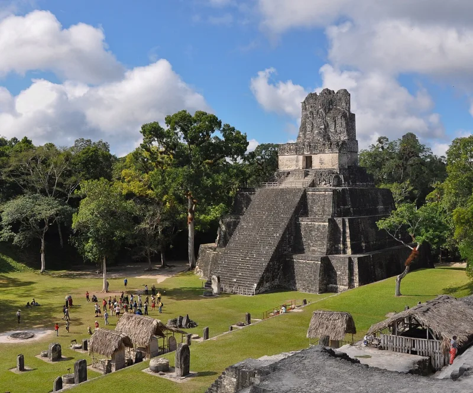
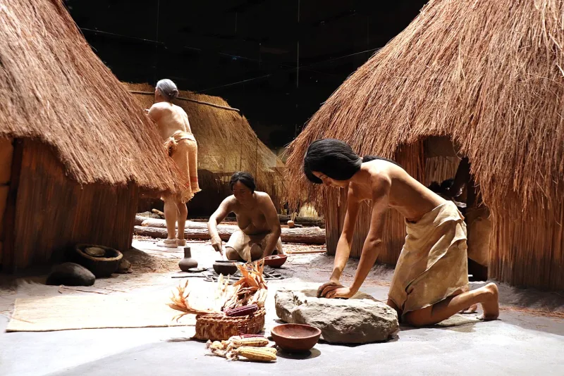
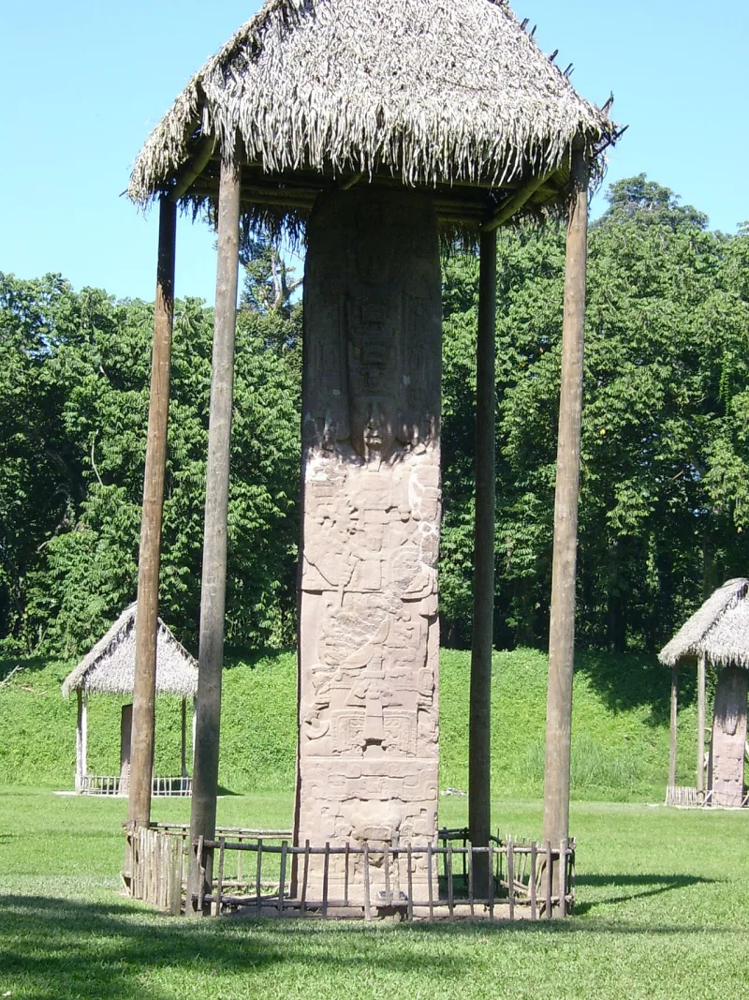

No good counter-argument has been published by LDS scholars.
A hemispheric Book of Mormon. Canonised revelations name North American Indians as Lamanites.
See D&C 28:8, 32:2 and 54:8. Joseph Smith pointed at ruins in Central America, in the Times and Seasons in 1842.
He pointed at sites in North America too. And the New York hill where he got the plates was the Cumorah of the last battles, in Mormon 6:6.
Joseph Fielding Smith warned that a second Cumorah would leave members "confused and disturbed in their faith." Marion Romney backed the New York hill in general conference, in 1975.
Under pressure from archaeology and DNA, scholars retreated to limited-geography models. Two camps now argue with each other.
The Mesoamerican one, at FAIR and Scripture Central. And the Heartland one, at Rod Meldrum's FIRM Foundation.
Each publishes detailed refutations of the other.
In 2019 a Gospel Topics statement said the church "does not take a position on the specific geographic locations." It asked members not to teach any geography in church settings.
Strong for you. This one leans on the digging and the DNA cases, so use it with them.
Their answer is that the text never names a modern place. So the whole-hemisphere view was a habit of mind, not revelation.
But the D&C is scripture, and it names North American tribes as Lamanites. Here is the telling part.
Believers now take apart each other's maps, using the same arguments critics use.
"Where did it happen? Even the church says it takes no position."



The text never names a modern place, and the distances in it require a small map.
Apologists respond that the text itself never names a modern location. They add that the travel distances inside it actually require a limited geography.
So the hemispheric model was a cultural assumption early members laid over the text. Joseph among them, speaking as a man. It was not revelation.
Scripture Central argues that a Mesoamerican setting meets dozens of textual tests. Writing systems. Cities. Warfare. Population.
And the church's official neutrality is fitting humility on a question scripture leaves open. They compare it to unresolved questions in biblical geography.
Strong for you. Believers now pull apart each other's maps, using the same arguments.
The retreat is documented in the church's own 2019 statement. It 'does not take a position on the specific geographic locations'.
The defence that the text never names a place fails against canon. The Doctrine and Covenants is scripture, not speculation, and D&C 28:8, 32:2 and 54:8 name North American tribes as Lamanites. Prophets taught the New York Cumorah as doctrine.
The strongest sign that no answer works is the apologists themselves. FAIR and Scripture Central publish refutations of the Heartland model. Their arguments mirror the critics' case against Mesoamerica. The Heartland side returns the favour.
When every proposed place is convincingly refuted by fellow believers, the claim has become untestable by moving it.